Material
Colour compressed boards. Advanced fibre engineering with a refined architectural surface.
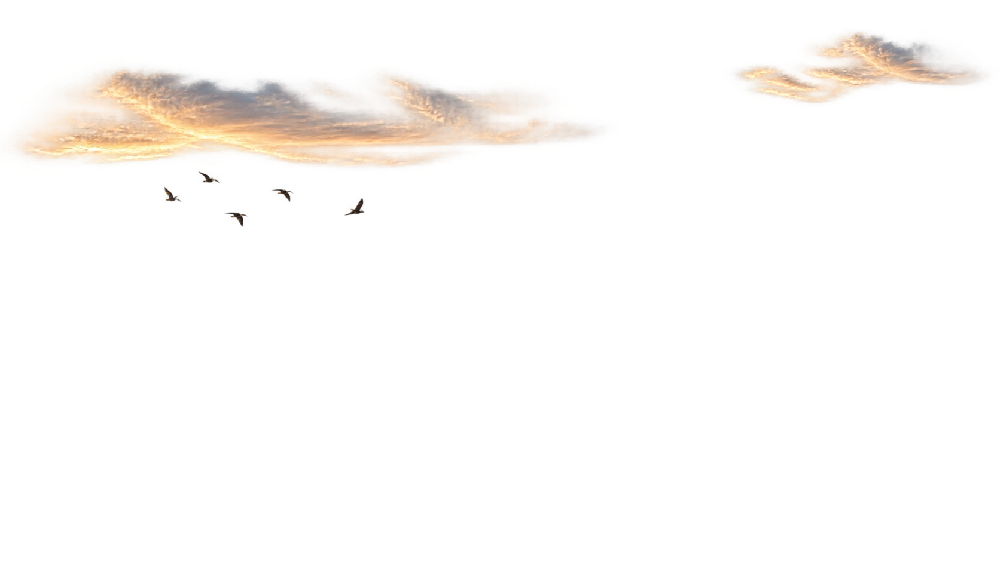
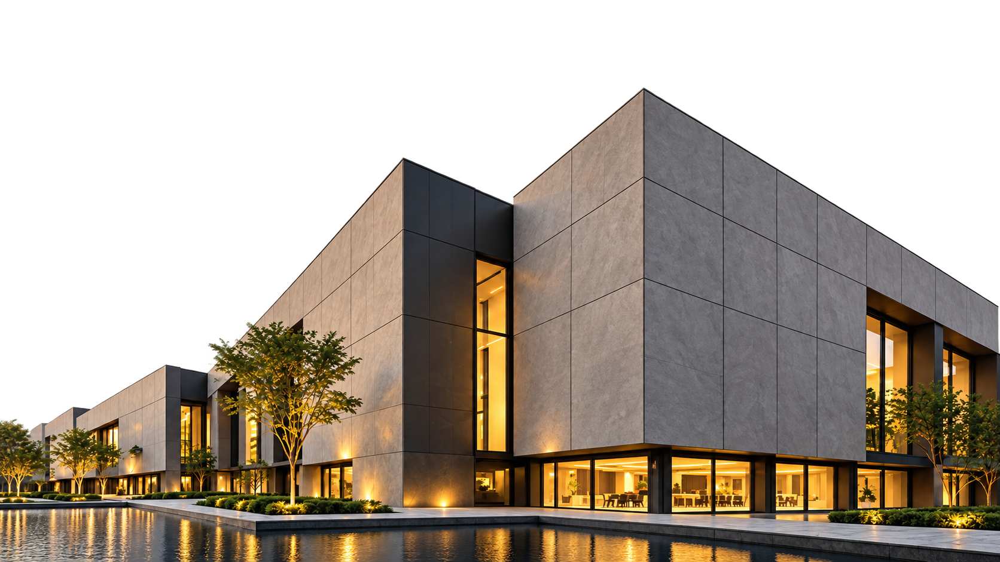
COLOUR COMPRESSED BOARDS
Premium façade boards engineered
for demanding exterior applications.
Architecture starts with an idea.
Monolith brings it together.
Through-coloured boards, engineered fixing and expert installation. One coordinated façade solution, from your first specification to the finished building.
Discover how it comes togetherColour compressed boards. Advanced fibre engineering with a refined architectural surface.
Concealed fixing and secondary framework, engineered to work together as one façade assembly.
Technical support and installation expertise, from material selection to the final panel.
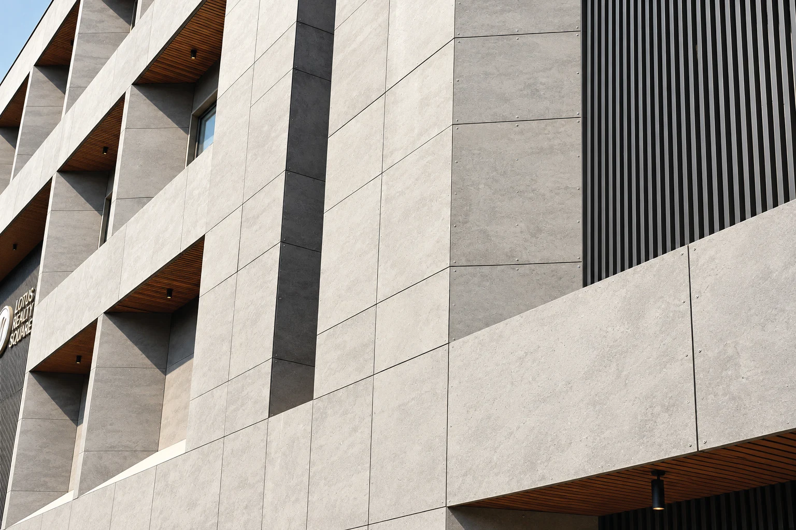
A STRAIGHT LINE. KEPT STRAIGHT.STRENGTH IN EVERY SURFACE
Wind, weather and everyday exposure. Monolith combines rigidity and dimensional stability with a surface designed for lasting architectural expression.
Freeze / thaw PASS Heat / rain PASS
Warm water PASS Soak / dry PASS
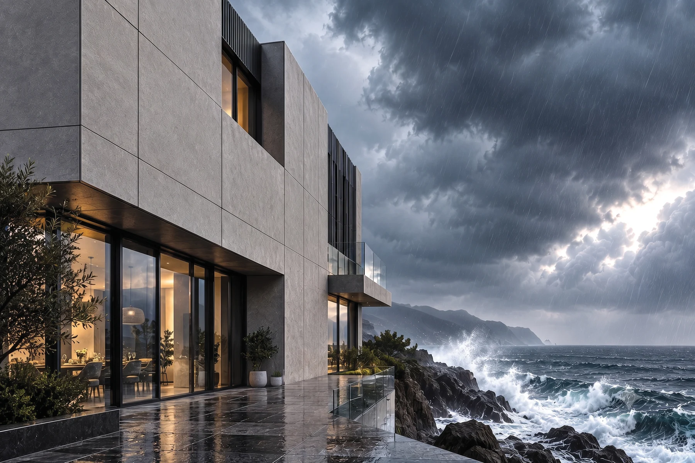
The forecast changes.
The intent stays.
A façade is more than its outer face. Explore the elements that turn a Monolith board into a complete building envelope.
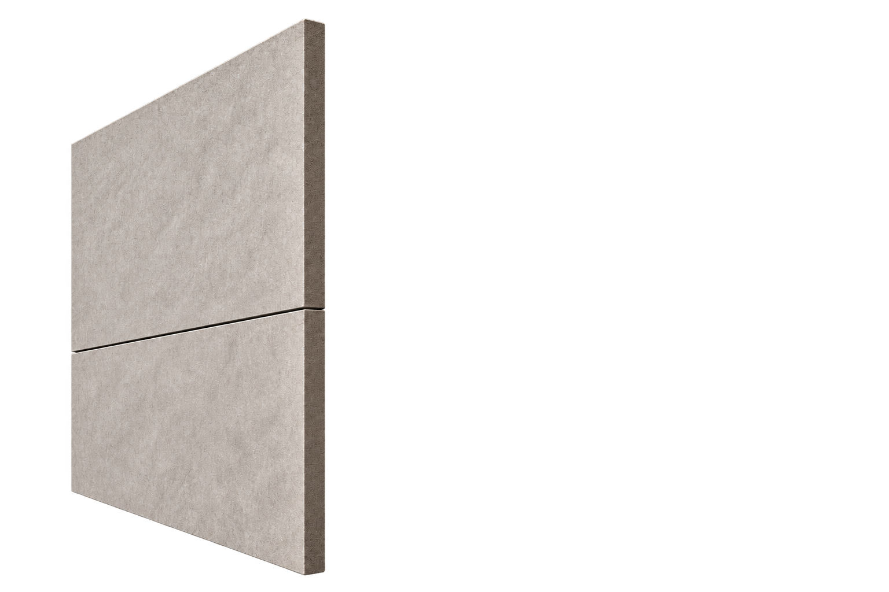
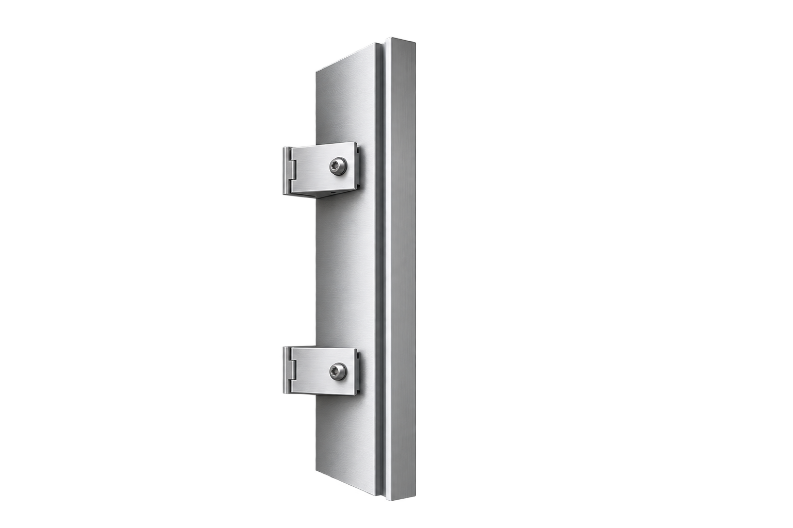
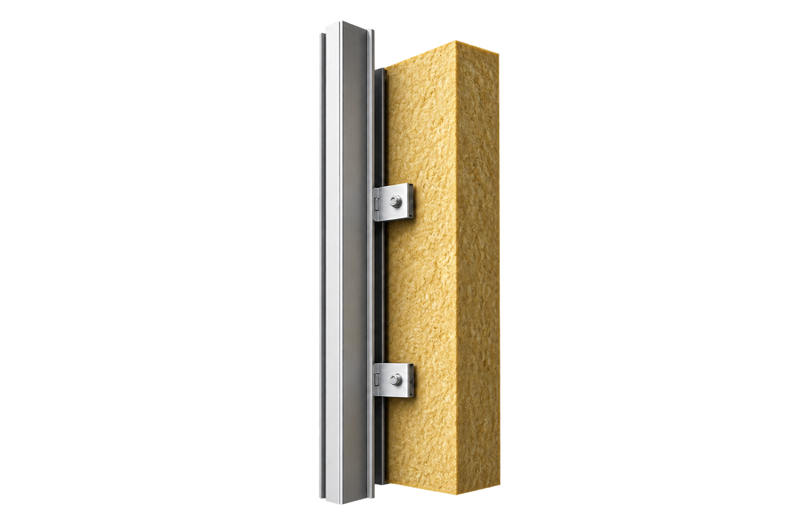
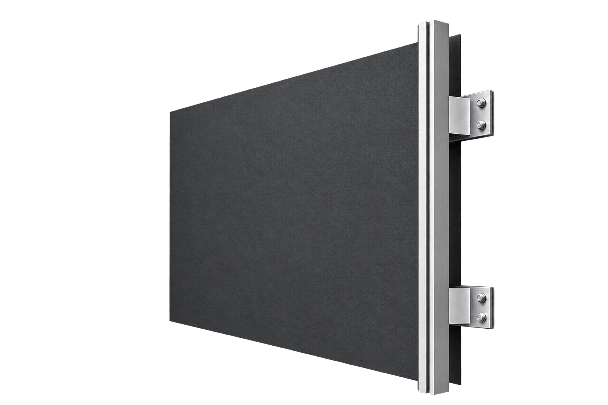
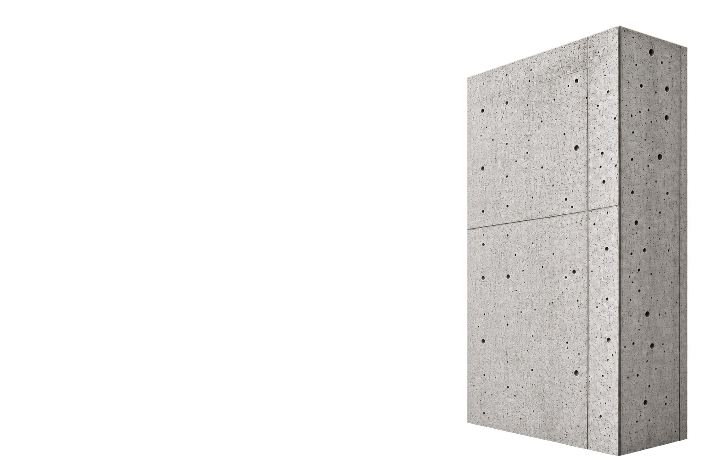
Conceptual façade build-up. Select a layer to explore its role.
Premium 12 mm façade boards create the visible surface, combining integral colour with refined texture and clean panel lines.
A SINGLE, CONNECTED COMMITMENT
From material selection to the finished façade.
Colour through the board. Character at the surface. Explore a considered palette, without a conventional paint layer between material and idea.
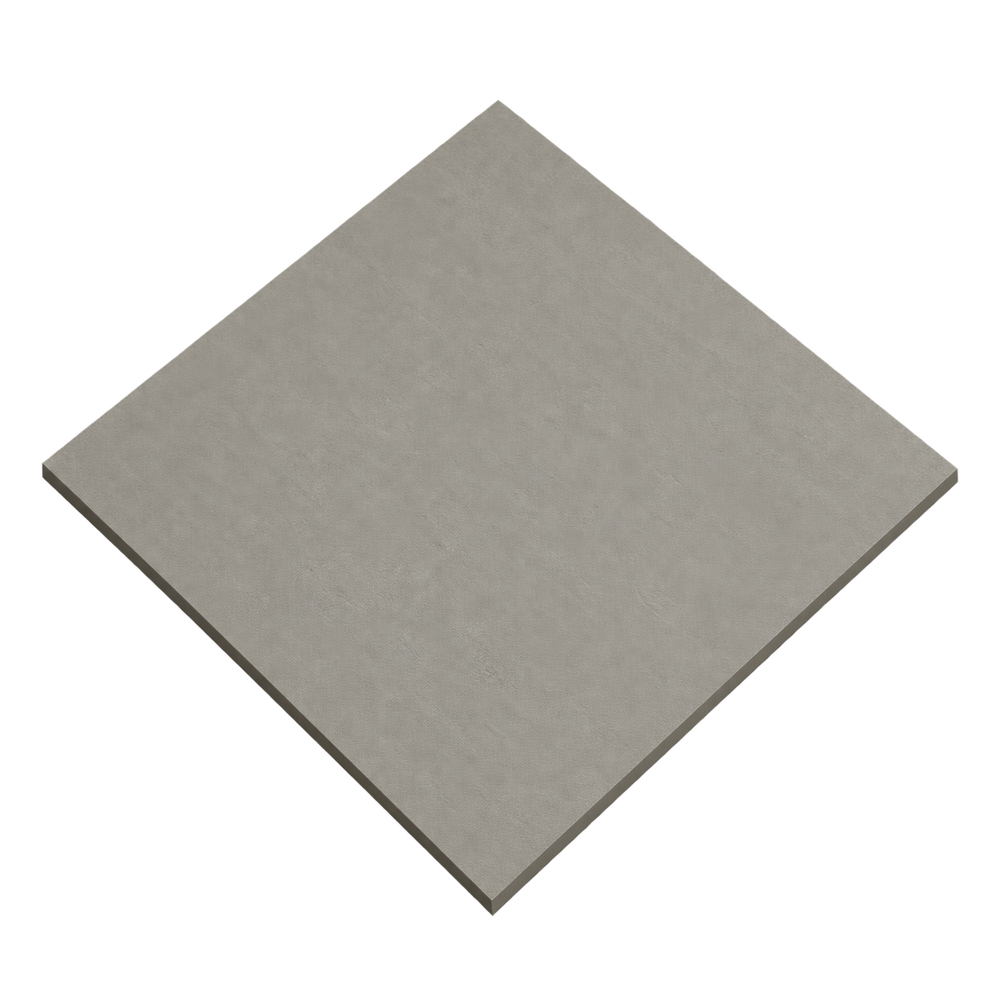
Digital colour preview. Confirm colour and texture with a physical sample.
CHOOSE YOUR COLOUR
CHOOSE YOUR TEXTURE
A quiet architectural neutral. Clean, versatile and beautifully understated.
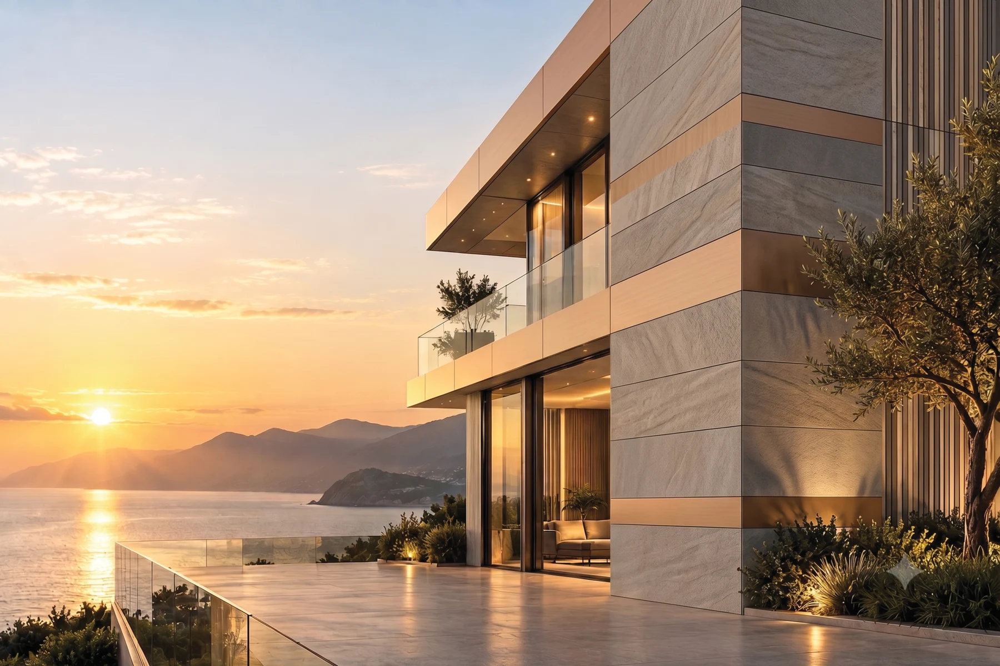
Explore the architectural possibilities.Brochure illustration; not a colour-matched simulation.MATERIAL CHOICES MATTER
Mineral-based and asbestos-free. Monolith brings material responsibility and installation expertise into the same conversation.
A mineral-based material foundation, developed for demanding architectural façades.
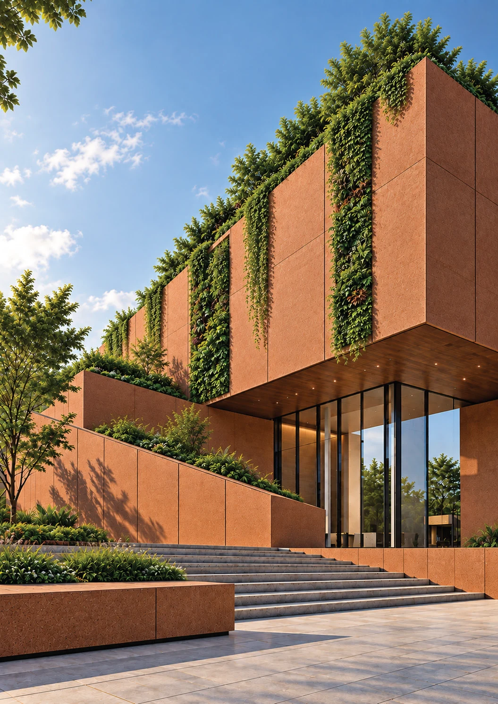
From corporate headquarters to public spaces. A façade material for places that need to perform as well as they look.
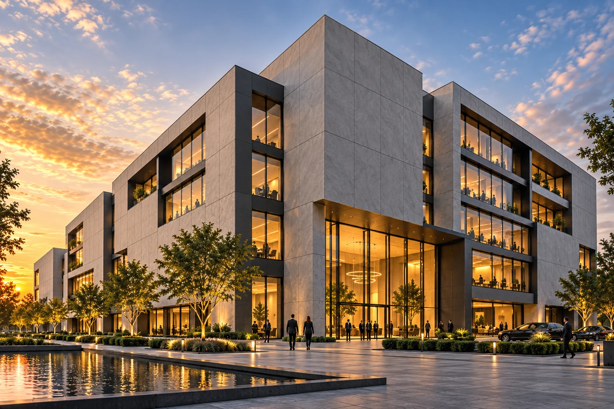
MONOLITH APPLICATION CONCEPTA concise specification reference from the supplied brochure. Speak to the technical team for project-specific recommendations and current test documentation.
| Property | Specification | Reference standard |
|---|---|---|
| Board dimensions | 1,200 × 2,400 mm | — |
| Board thickness | 8 / 10 / 12 mm | — |
| Density | 1,600 kg/m³ | EN 12467:2012 |
| Fire classification | Class A1 | EN 13501-1:2018 |
| Freeze / thaw | Pass | EN 12467:2012 |
| Warm water | Pass | EN 12467:2012 |
| Heat / rain | Pass | EN 12467:2012 |
| Soak / dry | Pass | EN 12467:2012 |
| Thickness tolerance | ±0.20 mm | EN 12467:2012 |
| Water permeability | Pass | EN 12467:2012 |
| Thermal conductivity | 0.162 W/m-K | ASTM C518-10 |
Brochure reference values. MOR, MOE and water-absorption figures vary across brochure pages; obtain confirmed values and current certificates from the technical team before specification.
From expansive planes to precisely articulated grids. Explore architectural expressions and new possibilities for Monolith.
Architectural concepts and brochure illustrations. Completed-project case studies to follow.
ALEX MONOLITH™
Put colour, texture and possibility in your hands.
Ready to specify? Explore technical data.